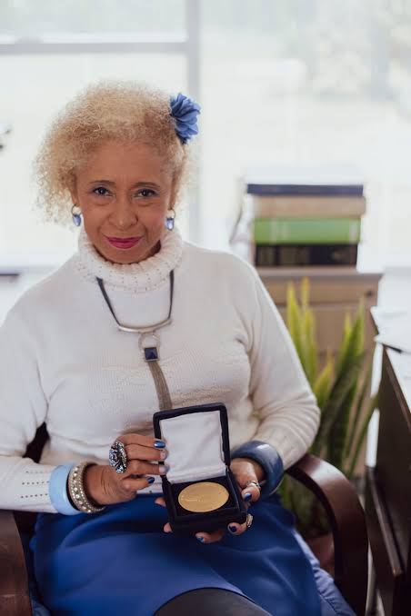

Doutorado em Física
Concluiu o doutorado na Universidade de Manchester.
Conheça Sônia Guimarães, física, pesquisadora e professora brasileira, referência para a presença de mulheres negras na ciência.
Conheça sua históriaSônia Guimarães é física, pesquisadora e professora brasileira. Concluiu seu doutorado em Física na Universidade de Manchester, no Reino Unido, em 1989. Em 1993, ingressou como professora no Instituto Tecnológico de Aeronáutica (ITA), tornando-se uma referência na ciência brasileira. Sua atuação envolve pesquisa em Física aplicada e materiais semicondutores.
Concluiu o doutorado na Universidade de Manchester.
Ingressou no Instituto Tecnológico de Aeronáutica.
Atua em pesquisa ligada à Física aplicada e tecnologia.
